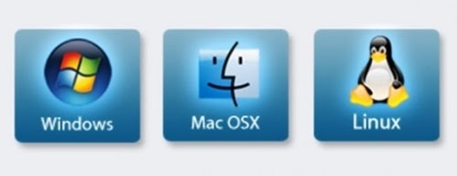
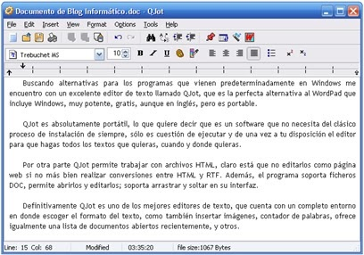

Podemos encontrar distintos tipos de software:
Software de sistema: Es el software que nos permite tener una interacción con nuestro hardware, es decir, el que controla la CPU y los periféricos; tambiés es llamado sistema operativo. Dicho sistema es un conjunto de programas que administran los recursos del hardware y proporciona una interfaz al usuario. Es el software esencial para una computadora, sin el no podría funcionar, como ejemplo tenemos a Windows, Linux, Mac OS X. Se clasifica en:
- Sistemas operativos: Windows, Linux, Mac Os, etc.
- Controladores de dispositivo: Drivers, firmware.
- Utilidades de sistema: Herramientas de diagnóstico, corrección y optimización.

|
Software de Programación: Es un conjunto de aplicaciones que permiten a un programador desarrollar sus propios programas informáticos haciendo uso de sus conocimientos lógicos y lenguajes de programación. Algunos ejemplos:
- Editores de programas
- Compiladores
- Intérpretes
- Enlazadores
- Depuradores
- Entornos de Desarrollo Integrados (IDE)
|
|
Software de Aplicación: Son los programas que nos permiten realizar tareas especificas en nuestro sistema. A diferencia del software de sistema, el software de aplicación esta enfocada en un área especifica para su utilización. La mayoría de los programas que utilizamos diariamente pertenecen a este tipo de software, ya que nos permiten realizar diversos tipos de tareas en nuestro sistema. Las aplicaciones son parte del software de una computadora, y suelen ejecutarse sobre el sistema operativo.
- Editores gráficos, de música, de video, etc.
- Sistemas gestores de bases de datos. (MySQL)
- Programas de comunicaciones.
- Paquetes integrados de ofimática. (Editores de texto, hojas de cálculo, bases de datos, etc.).
- Programas de diseño asistido por computador.
- Aplicaciones de Sistema de control y automatización industrial.
- Software educativo.
- Software médico.
- Software de cálculo numérico.

Una aplicación de software suele tener un único objetivo: navegar en la web, revisar correo, explorar el disco duro, editar textos, jugar, etc. (Ejemplo: Internet Explorer, Outlook, Word, Excel, WinAmp, etc.).
Una aplicación que posee múltiples programas se considera un paquete. (Ejemplo: Microsoft office, Openoffice, etc.).
Características de las aplicaciones:
- En general, una aplicación es un programa compilado, escrito en cualquier lenguaje de programación.
- Las aplicaciones pueden tener distintas licencias de distribución como ser freeware, shareware, trialware, etc.
- Las aplicaciones tienen algún tipo de interfaz, que puede ser una interfaz de texto o una interfaz gráfica (o ambas).